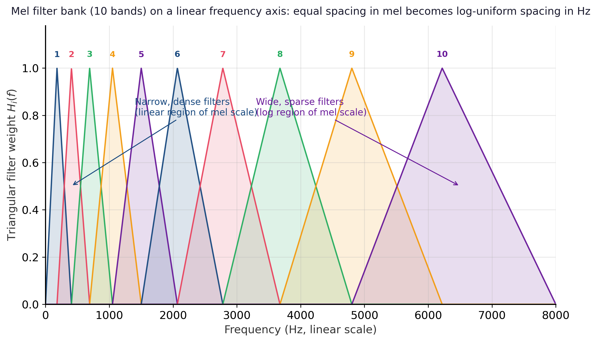

The raw STFT magnitude from Section G.2 is technically correct but perceptually wrong. Human hearing is roughly logarithmic in frequency: the gap between 100 Hz and 200 Hz feels musically equal to the gap between 1 kHz and 2 kHz, even though one is 100 Hz wide and the other is 1000 Hz wide. A linear spectrogram allocates one bin per 40 Hz everywhere, which wastes resolution at high frequencies (where humans cannot discriminate it) and starves low frequencies (where they can). The mel scale, the mel filter bank, and the log-mel spectrogram together fix this mismatch, and the result is the de facto input representation for nearly every speech and audio model. The illustration below makes the warping intuitive: imagine a piano whose bass keys are stretched wide and treble keys squeezed narrow, so each perceptual semitone takes equal physical space.
The Mel Scale
The mel scale maps physical frequency in hertz to a perceptual scale on which equal distances correspond to equal perceived pitch differences, calibrated by the Stevens, Volkmann, and Newman pitch experiments of 1937. The canonical (O'Shaughnessy) closed-form approximation is
with the inverse $f(m) = 700 \, (10^{m / 2595} - 1)$. The scale is approximately linear below 1 kHz and approximately logarithmic above it, mirroring the structure of the human cochlea. The exact constants differ slightly across the literature (HTK uses 2595, Slaney's formulation in librosa is slightly different); for practical audio ML the differences are imperceptible.
The Mel Filter Bank
A mel filter bank is a set of $M$ triangular weighting functions (typically $M = 64$, $80$, or $128$) whose centers are spaced uniformly on the mel scale, hence approximately log-uniformly on the hertz scale above 1 kHz. Each triangle rises linearly from zero at its left edge to one at the center frequency of the next filter, then falls back to zero at the right edge; adjacent triangles overlap so that every STFT bin contributes to one or two filters. Concretely, if the $i$-th triangle has left, center, and right boundaries $f_{i-1}, f_i, f_{i+1}$ in hertz, the filter weight at FFT frequency $f$ is
The mel spectrogram is obtained by left-multiplying the power spectrogram $|X[m, k]|^2$ (of shape $T \times K$, where $K = N/2 + 1$) by the mel filter matrix $W \in \mathbb{R}^{M \times K}$, producing an $M \times T$ matrix in which row $i$ is the energy in the $i$-th mel band over time. Eighty mel bins is the standard for Whisper and most encoder-decoder ASR systems; 128 is common in music tagging. Figure G.3.1 overlays ten triangular filters on a linear-hertz axis to make the warping visible: the leftmost triangles are narrow and densely packed, while the rightmost ones spread out and overlap broadly, exactly the log-uniform spacing the mel scale prescribes.

The Log-Mel Spectrogram
One last step makes the representation neural-network-friendly. Acoustic energy spans many orders of magnitude (the dynamic range of speech is roughly 60 dB), and perception itself is logarithmic in intensity (a doubling of energy feels like a fixed increment in loudness, the basis of the decibel). The standard remedy is to take a log of the mel-filtered energies:
where $\varepsilon$ is a small floor (typically $10^{-6}$) that avoids $\log 0$ when a mel band is silent. The resulting log-mel spectrogram is the canonical input to Whisper, Wav2Vec 2.0, HuBERT, and most other modern speech models. It is conventionally followed by per-utterance or per-band mean-variance normalization to stabilize training.
The full sample-to-log-mel pipeline (load, frame, window, STFT, mel filter, log) is one short script in librosa, the standard Python toolkit for audio analysis.
import librosa
import numpy as np
# Load audio resampled to 16 kHz (the rate Whisper expects)
y, sr = librosa.load("speech.wav", sr=16000)
# Compute a log-mel spectrogram with Whisper-style parameters
mel = librosa.feature.melspectrogram(
y=y,
sr=sr,
n_fft=400, # 25 ms window at 16 kHz
hop_length=160, # 10 ms hop
win_length=400,
window="hann",
n_mels=80, # number of mel bands
fmin=0.0,
fmax=8000.0, # Nyquist for 16 kHz
power=2.0, # power spectrogram, not amplitude
)
log_mel = np.log(mel + 1e-6)
print(log_mel.shape) # (80, num_frames)
(80, num_frames), ready to be fed as a 2D image into a convolutional or transformer encoder.MFCC: The DCT of the Log-Mel
Before deep learning, classical ASR systems applied one more step: a discrete cosine transform (DCT) along the mel-band axis, producing mel-frequency cepstral coefficients (MFCC). The DCT decorrelates the mel bands (their values are highly correlated in natural speech) and concentrates energy into the first few coefficients, which is helpful for Gaussian-mixture acoustic models that assume diagonal covariance. The standard MFCC representation keeps the first 13 coefficients (sometimes augmented with first and second time differences, "delta" and "delta-delta" features), discarding the higher-order ones as noise.
For modern neural systems, the DCT is unnecessary: convolutions and self-attention learn whatever linear combinations of mel bands are useful, and the DCT throws away information that the network would otherwise have. The rule of thumb is therefore: use MFCC for classical GMM-HMM systems and for very small models where decorrelation helps; use log-mel for everything else, including all transformer-based ASR and audio generation models in Chapter 20.
When a baseline ASR system, a speaker-identification GMM, or a classical music-information-retrieval pipeline still wants MFCC features, librosa collapses the full sample-to-MFCC chain (load, STFT, mel filter, log, DCT, coefficient truncation) into one line: mfcc = librosa.feature.mfcc(y=y, sr=16000, n_mfcc=13, n_fft=400, hop_length=160, n_mels=80). The result is a $(13, T)$ array of cepstral coefficients ready to feed into a downstream classifier. For transformer-based systems use librosa.feature.melspectrogram instead (Code Fragment G.3.1 above) and skip the DCT.
The log-mel spectrogram produced here is the literal input tensor to the Whisper encoder discussed in Section 20.5, and the mel-filter matrix $W$ appears verbatim in the data-loading pipelines of Section 20.0.1 (Audio Data). The MFCC variant briefly resurfaces in the historical discussion of GMM-HMM systems that frames the same section.
The mel scale warps frequency to match perception, the mel filter bank applies that warping as $M$ triangular weights on the FFT bins, and a logarithm compresses the dynamic range so neural networks can train stably. The resulting $(M, T)$ log-mel tensor (typically $M = 80$, $T$ frames per utterance) is the canonical input to Whisper, Wav2Vec 2.0, HuBERT, and almost every other modern speech and audio model.
Objective
Re-implement the librosa mel-spectrogram pipeline step by step (frame, window, FFT, mel filter, log), confirm equivalence with librosa.feature.melspectrogram, and feed the result into an off-the-shelf Whisper model to verify the tensor is ingestion-ready. The goal is not faster code; it is a transparent end-to-end pipeline whose every tensor shape and unit you can defend.
Setup
- Install
librosa,numpy,matplotlib,torch, andtransformers. - Pick a 5 to 30 second WAV file (English speech is easiest). Down-mix to mono and resample to 16 kHz with
librosa.load(path, sr=16000, mono=True). - Fix the configuration:
n_fft=400,hop_length=160,win_length=400,n_mels=80,fmin=0,fmax=8000. Document why each value matches Whisper's expected input.
Steps
- Step 1: Frame the signal. Use
librosa.util.frame(y, frame_length=400, hop_length=160). Report shape, expected frame count from the formula, and the duration in seconds the frames cover. - Step 2: Apply a Hann window. Multiply each frame by
scipy.signal.windows.hann(400). Plot frame 100 before and after windowing; confirm the taper. - Step 3: Compute the real FFT. Zero-pad each windowed frame to length 512, then apply
numpy.fft.rfft. The result is a complex array of shape(257, num_frames). Compute the magnitude squared to get the power spectrogram. - Step 4: Build the mel filter bank. Call
librosa.filters.mel(sr=16000, n_fft=512, n_mels=80, fmin=0, fmax=8000). Report shape(80, 257). Plot rows 5, 25, and 65 as overlapping triangles to confirm the band shape and the perceptual warping toward higher frequencies. - Step 5: Apply the mel filter and log compression. Multiply
mel_basis @ power_specto get the mel spectrogram of shape(80, num_frames). Applylibrosa.power_to_db(mel_spec, ref=np.max)for log compression. Plot the result withlibrosa.display.specshow. - Step 6: Verify against librosa. Compare your output against
librosa.feature.melspectrogramcalled with identical parameters; report the per-element max absolute difference. It should be near zero. - Step 7: Feed into Whisper. Load
WhisperProcessor.from_pretrained("openai/whisper-tiny")andWhisperForConditionalGeneration.from_pretrained("openai/whisper-tiny"). Pass the raw waveform through the processor, then pass your hand-built log-mel through the model directly (after the appropriate normalization the processor applies). Compare the two transcripts character by character. They should match closely.
Stretch Goals
- Compute the MFCC (Step 5 + DCT) and compare with
librosa.feature.mfcc. Plot the 13 coefficients over time. - Replicate the pipeline in PyTorch via
torchaudio.transforms.MelSpectrogramand verify equivalence on GPU. - Augment the pipeline with SpecAugment (time mask + frequency mask) and visualize how the masked spectrogram still preserves enough structure for Whisper to transcribe.
Expected Output
Expected time: 2 to 3 hours. Difficulty: introductory to intermediate. Artifact: a single Python script (or notebook) that produces seven plots (windowed frame, power spectrum, mel filter bank, mel spectrogram, log-mel spectrogram, librosa comparison, Whisper transcript) and a printed numerical equivalence check.